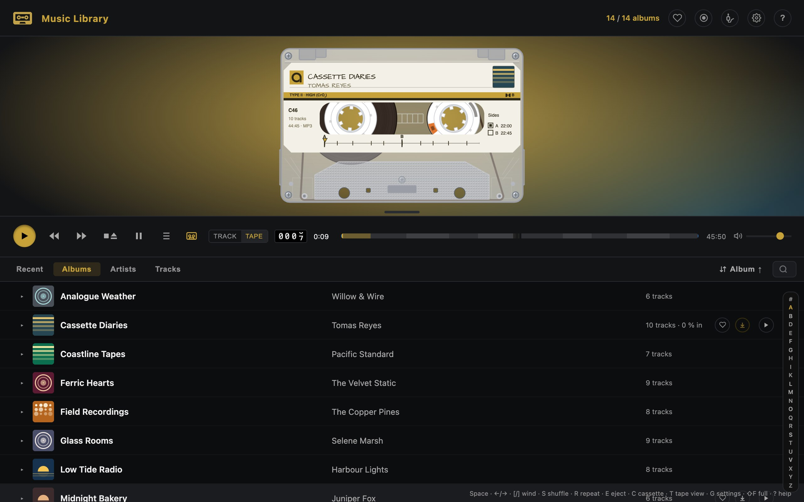
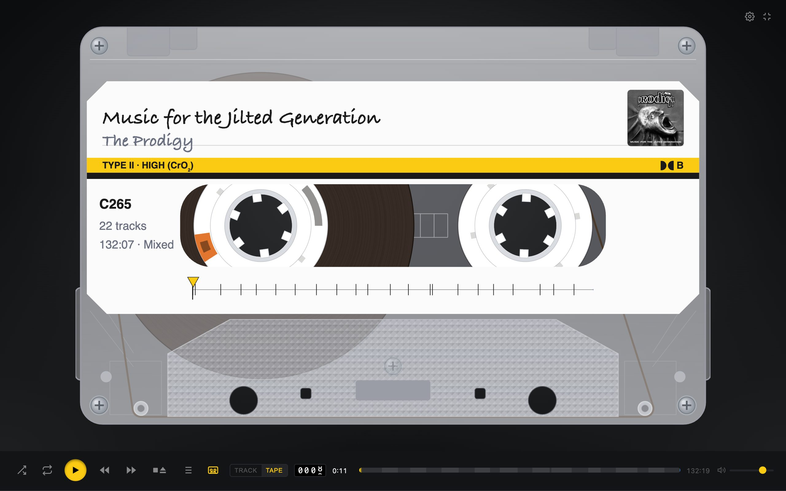
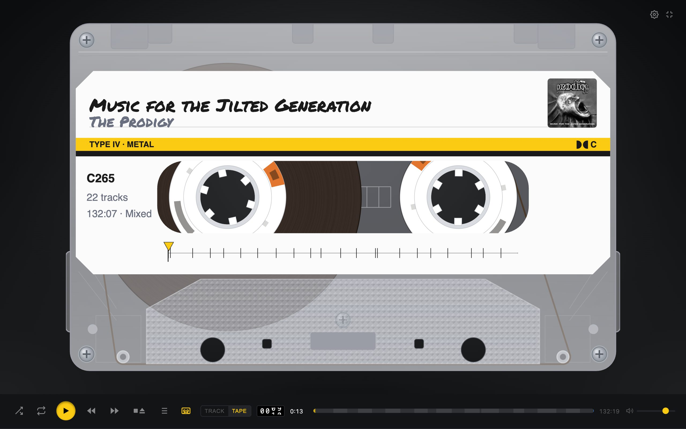
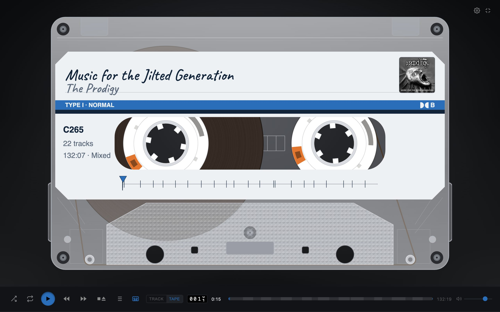
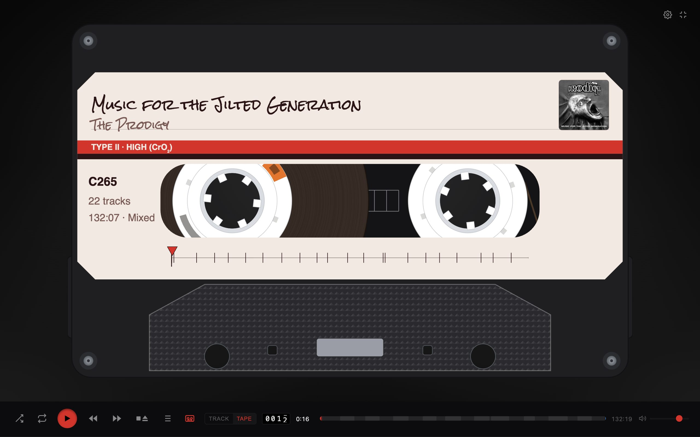
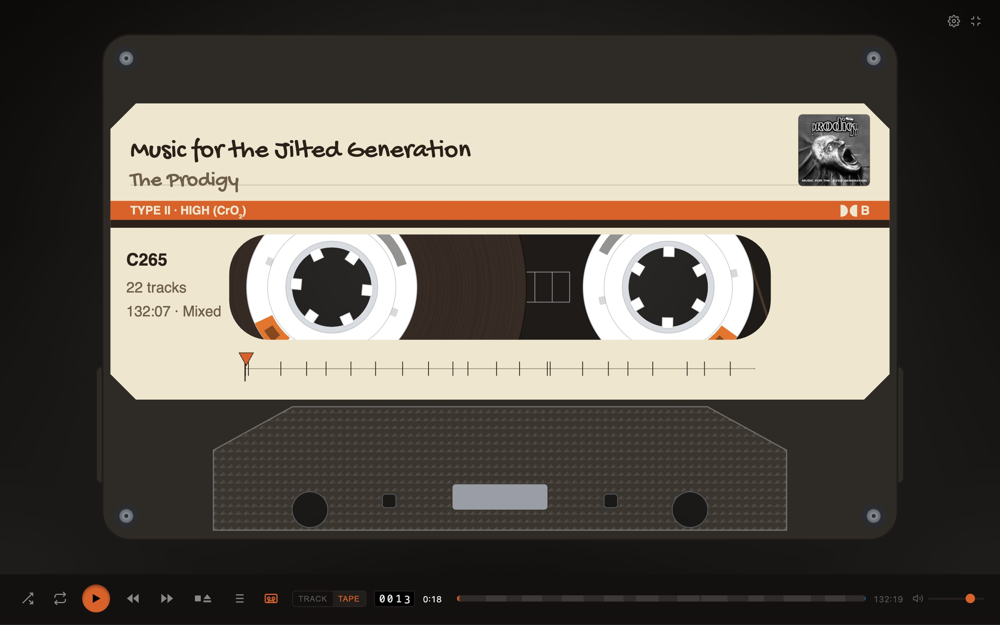
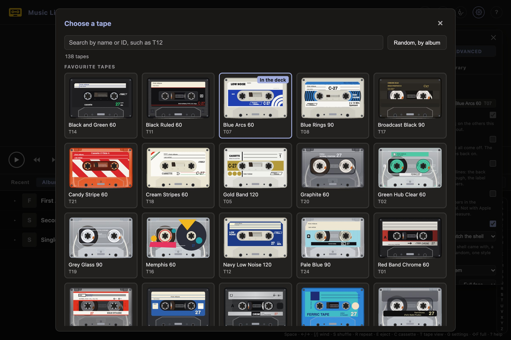
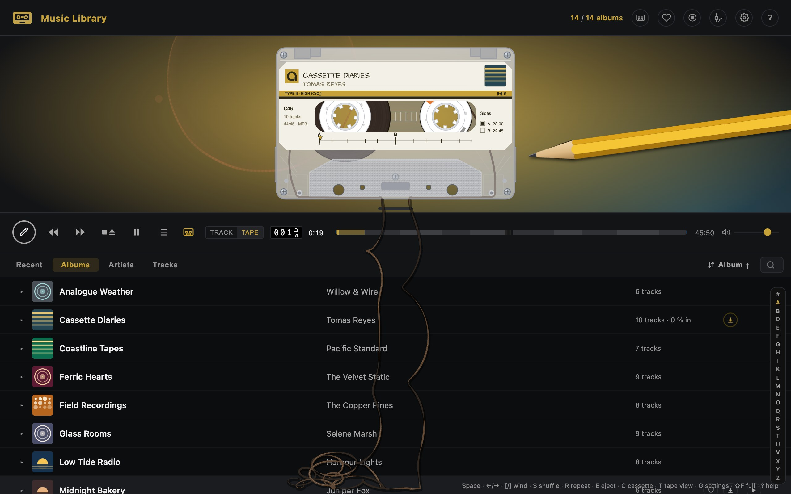
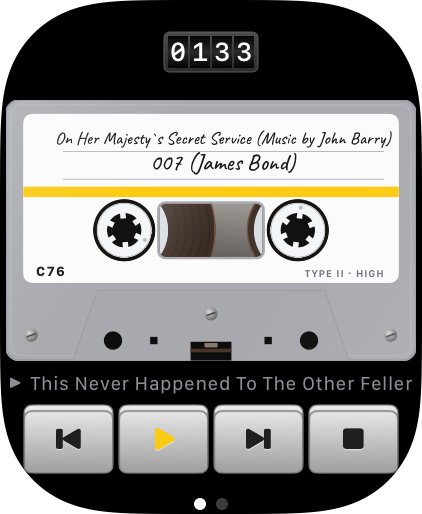
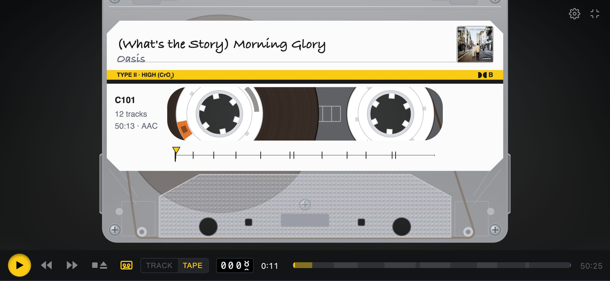

Your music, on tape.
Tape Deck plays your own music library as a cassette: drawn to scale, with reels that wind as you listen, a handwritten label and keys that latch.
iPhone · iPad · Apple Watch · Mac · CarPlay

A real cassette, not a picture of one
The cassette is drawn to the standard's dimensions and measured off a real tape. The reels are sized by how long the side is, and wind from one to the other as the music plays.

- A label for every album: the title and artist in handwriting, the cover, the running time, and an index strip with a mark for each track. Click the index to wind there.
- Six shells, eight classic tapes. One of the shells colours itself from the album's cover, and the page with it. The classic tapes each have their own window, hubs and label.
- 174 tapes drawn from real cassettes of the 1970s to the 1990s, and thirteen label styles to print on them. Choose from a grid of little cassettes, searched by name or ID, with your favourites first. Or let each album keep a tape of its own: Random, by album. A quick flick across the label goes on to the next.
- Eight hands, from a biro to a marker, block capitals to a typed label, or a different one for each album.
- Type I, II or IV, with Dolby B or C: printed on the label, cut into the shell's edge, and heard in the sound.
- Take it apart: a clear shell, the front off, or the whole cassette exploded into its layers, which tilt a little as you move the mouse or the phone.
- LED VU meters in the transport, if you want them: twelve lights a channel, green, amber and red, showing the tape's level.
- Each tape keeps its place. Put an album back in and it plays on from the track and second it came out at, or turn that off and start every tape from the top.





Keys that behave like a deck's
Choose a portable recorder's keys, or a modern player's. Either way, the tape moves the way a tape does.
Play latches
It stays down while the tape runs and points the way it's going. Pressed again, it turns the tape over at the same point, like a deck's DIR key.
Wind it
Rewind and fast forward race the reels with the sound of tape flying past the heads. Or drag the cassette to wind it by hand.
Auto-reverse
Side B plays backwards with a clunk of the mechanism, or the tape is turned over between sides, as you choose.
Leader and hiss
Each side starts and ends with clear leader you can hear, and a shop-bought tape's cue tone after the last track.
Motor wow
The motor spins up when you press Play and runs down when you stop, and the pitch bends with it.
Gapless
Under the tape, albums that run together play as one, joined on the exact sample.
From fresh to chewed
One slider for how battered the tape is. Turn it up and you get hiss under the music, a wobble in the pitch and scratches on the shell.
- Played in, well loved, worn. Every step sounds and looks a little older.
- Chewed. Now and then the deck eats the tape: the music garbles, and a loop of tape falls out over the page. Wind it back in with a pencil.
- Snapped. A track that never arrives pulls the tape taut until it breaks. Press Play to splice it.

Your whole library
Tape Deck plays music you own. Copy it into the app, play a folder where it is (one on a NAS too), or point it at your own music server and play everything on it: a Tape Deck Server (free and open source, it serves a folder of albums from any computer), Plex (sign in with your Plex account), Jellyfin, or a Subsonic server such as Navidrome. With an Apple Music subscription, your Apple Music library plays as tapes too.
Recent first
The albums you listened to last, then what's new in your library.
Albums, artists, tracks
Sort from one button, jump by letter, and search as you type. A search forgives a missing accent.
Favourites everywhere
A heart on a track or a whole album follows you between your iPhone, iPad and Mac through iCloud.
Downloads
From a server, an album downloads as you play it, or ahead of time for the train, a whole album or a single track. You choose how much space to give it. While anything downloads, the Lock Screen and the Dynamic Island show what's coming and how far it has got.
Songs on this iPhone
Switch it on and the songs you synced to your iPhone or iPad from a Mac or PC play as tapes too. Copy-protected songs are left out, and the app says how many.
Through iCloud Drive
Put albums in the Tape Deck folder in iCloud Drive and they're on your iPhone, iPad and Mac within seconds, filling in as iCloud brings them.
Mixtapes
Make one by hand, adding albums and tracks in the order you like, or make a tape of what you've played in the last hour. It plays as a tape of its own, sides and all.
Send this tape
Send the tape in the deck as a link, from the share sheet or in Messages: a page that draws its cassette, its label in its hand, and lists the tracks a side. The music doesn't go with it.
A demo tape
Until you have music of your own, the app has one song to play, so there's a tape in the deck from the first launch. Once your music or a server arrives it stays behind them, out of the lists: search for Andy Bateman or Glenn Callow and there it is.
Albums by their own names
Where a folder had to write a colon or a slash as an underscore, the album shows its proper name from its tags.
Apple Music, as tapes
Apple Music, from the source button in the header, swaps your music for your Apple Music library: albums, artists, songs and playlists, and a search of the whole catalogue. The sound is Apple Music's own, so the tape's hiss and wear step aside; the reels and the keys carry on. Needs a subscription.
Audiobooks and podcasts
Connect your Audiobookshelf server and the deck plays your books and podcasts too, each book a tape and each chapter a track.

- Your place is kept on your server, so a book carries on where you left it, here or in Audiobookshelf's own app.
- A book plays while it downloads, and one you start hours in plays within seconds, not after the whole file has come.
- Read a little slower or faster, 0.8× to 1.2×, at the same pitch.
- Skip 15 seconds back or 30 on from the lock screen, the headphones or the car.
- A book can't lose its place to a stray tap: only a deliberate wind moves its tape.
On your wrist
On Apple Watch, Tape Deck shows the tape in your iPhone's deck, drawn the same way, and the Digital Crown sets your iPhone's volume.
- The same cassette: its shell, its handwritten label and its reels, turning as the tape plays, with a counter that rolls with them.
- Tap the cassette to turn it over where it is. The other side plays on from the same point, side B forwards under its own letter.
- Turn the crown for the volume, as in Now Playing.
- Chewed? The crown turns the pencil in the hub and winds the tape back in.
- Your recent albums as cassette cases on a shelf, each in its own colour and hand, and your books with how far in you are.
- A complication puts a cassette on your watch face, with what's playing where there's room.

In the car, and with Siri
Tape Deck is a CarPlay app. Choose from your music and your books on the car's screen, and the tape in your iPhone's deck plays.
- Latest, Albums, Artists, Books and Podcasts on the car's screen. Latest gathers the newest episodes, the albums you listened to last and the books you're reading. A long list comes in runs of letters and names, so all of it can be reached while you drive.
- Now Playing has keys for what's in the deck: the heart, shuffle and repeat, a book's speed, and turn over. Up Next lists the tape's tracks, or a book's chapters, and a tap plays one.
- A square picture on the car's Now Playing and your lock screen: the cassette's window, or the whole tape on the album's colours.
- It carries on after a call or the car's own announcement.
- Ask Siri by name: "Play Rumours in Tape Deck", for an album, an artist or a book. "Carry on the tape in Tape Deck", "Play what's new in Tape Deck" and "Stop Tape Deck" work too, and all of them are in the Shortcuts app.
On iPhone, iPad and Mac
One app, at home on each.
- Simple or Advanced. A new install starts in Simple: plain keys, one side, and only the settings that matter. Advanced, at the top of tape settings, has everything.
- A first-run guide rings each button people ask about, once, with a line on what it does. The help brings it back.
- Handoff between your iPhone, iPad and Mac: open Tape Deck on another device and the tape in the deck plays on at the same track and second.
- On the iPhone, turn it sideways and the cassette fills the screen. Haptics let you feel the keys and the reels.
- On the Home Screen, a widget of the cassette in the deck, its reels turning while it plays and its keys under it, in three sizes, on the Lock Screen and in StandBy.
- In Messages, eight animated stickers of the cassettes, each labelled in a hand with something to send, and a way to send the tape in your deck as a link.
- On the Mac, menus with the standard shortcuts, a mini player that floats above your work, and the media keys. The widget goes on the desktop and in Notification Centre too, drawn in lines when another window is in front.
- A right-click on the keys, the cassette, an album's row or any of the header's buttons opens a menu of what can be done there, and ends with About Tape Deck and its version. Under a finger or an Apple Pencil, a long press on a row opens its menu.
- In a browser, the page saved to the Home Screen opens with no network once it has been opened online, and the tab's title says what's playing.
- Named for VoiceOver: every control has a name, and a ring shows where the keyboard is.
- An MX Creative Console plugin for the Mac, which winds the tape with the dial and puts the keys on its buttons, is built and not released yet.
- Everywhere, the lock screen and Control Centre, AirPlay speakers with the cassette kept in time with what you hear, and playing on after a call or an announcement.

Private by design
No account, no sign-in, no tracking. Tape Deck asks for one permission, and only if you choose Apple Music from the source button: to use Apple Music. Your music stays on your devices and your own server, and your favourites go through your own iCloud.
Get it
Tape Deck is on the App Store for iPhone and iPad, free, with the Apple Watch app inside the iPhone one. The Mac's is in review (as at 2026-10-24).
The beta stays on TestFlight for iPhone, iPad and Mac, and has the newest changes first. Join the beta on TestFlight: open the link on your iPhone, iPad or Mac, install TestFlight from the App Store if it asks, then choose Accept and Install. Places are limited, so if the link says the beta is full, try again later.
It needs iOS 18 or later on the iPhone and iPad, macOS 15 on the Mac and watchOS 11 on the Apple Watch.
Questions? The help starts with a numbered picture of the header, the keys and an album’s row, then covers getting your music in, the keys, the settings and the questions testers have asked.